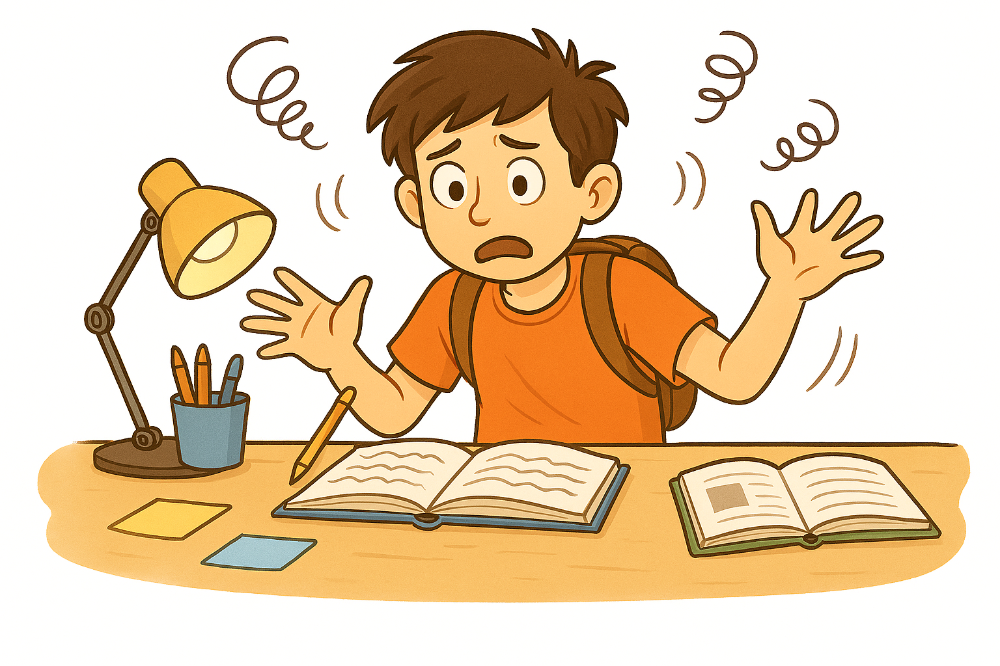
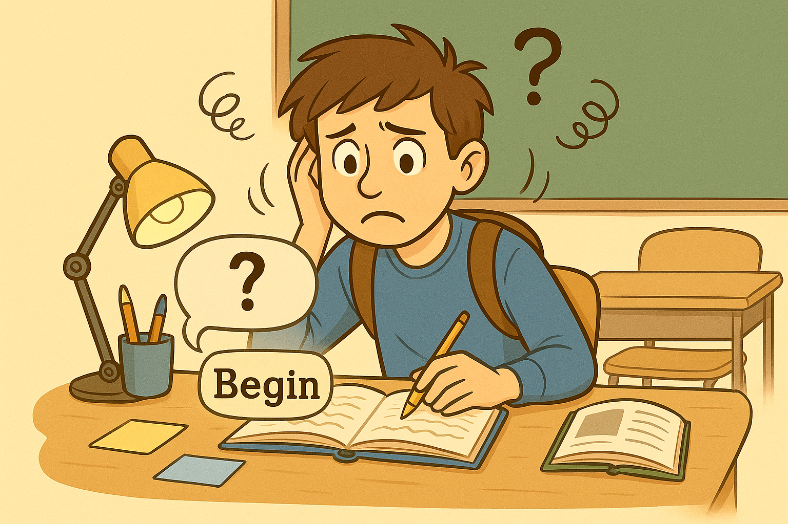
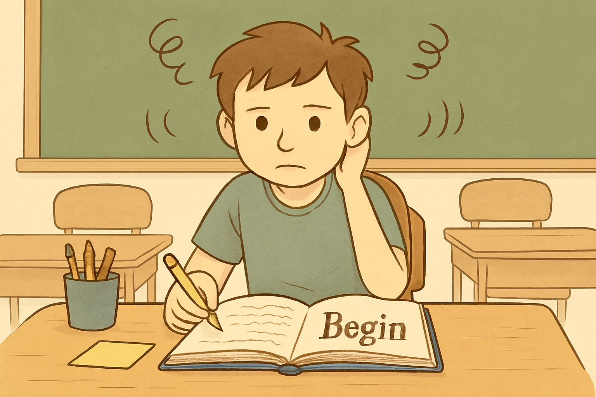

The Study Barriers
Tap each barrier to learn more about what can block effective study.
Word Clearing
Study Tools
Built-in Dictionary
Simple lookup: definitions + origin/derivation + audio pronunciation when available.
Master Learning with Proven Study Technology
Tap each barrier to learn more about what can block effective study.
Simple lookup: definitions + origin/derivation + audio pronunciation when available.
Based on article "The Barriers to Study" by L. Ron Hubbard
It has been discovered that there are three definite barriers which can block a person’s ability to study and thus his ability to be educated. These barriers actually produce physical and mental reactions.
If one knows and understands what these barriers are and how to handle them, his ability to study and learn will be greatly increased.
The Barriers to Study form the core basis of The Technology of Study®.
If one is attempting to understand the function and operation of a car or a computer or a solar system, the printed page and spoken word are no substitute for the object itself.
It would be difficult to understand how to use a computer for the first time if you did not have the computer there in front of you. In fact, lacking the object associated with a word can inhibit all understanding (I think we can agree here that attempting to study how an aircraft flies and the various parts of an aircraft, without ever seeing or touching an aircraft, or a reasonable mock-up of one, would make a successful study of it pretty much impossible).

If the mass of a subject is absent, you can actually feel squashed. It can make you feel bent, sort of spinny, sort of dead, or bored. A person studying a subject without the objects related to that subject, will experience these and several other specific reactions.
Knowing how to identify and handle these reactions is vital to a student's ability to grasp and use a subject - and more than vital to a teacher's ability to get a student to learn the subject.
A gradient is a way of learning or doing something step by step. A gradient can be easy where each step can be done easily, or it can be hard where each step is difficult to do.
Too steep a gradient consists of not having mastered prior skills before going on to more complicated or detailed steps.

A student who has skipped a gradient may feel a sort of confusion or a feeling of reeling (i.e., moving or swaying like you might fall).
These are two reactions a person can experience when they have missed a step or hit too steep a gradient in the subject they’re studying.
This is often referred to as “missed basic skills” or “insufficient basic skills.”
The third and most important barrier is the misunderstood word.
“Mis” means not or wrongly. “Misunderstood” means not understood or wrongly understood. A misunderstood word is a word which is not understood or a word which is wrongly understood.
It can make you feel blank or washed out. It can make you feel “not there” and a sort of a nervous upset feeling can follow after that.
The matter is far more critical than one might surmise and of the three barriers it is the misunderstood that bears most upon human relations, the mind and understanding.
It is the misunderstood word that establishes aptitude—or lack of it.
It produces a vast panorama of reactions and is the prime factor involved with stupidity. It also determines whether or not one can actually perform a learned skill, and to what degree of proficiency. All of these are the result of one or more words or symbols not understood or wrongly understood.
The misunderstood word can stop a student in his tracks completely. Knowing how to determine when there is a misunderstood word or symbol, how to find it and how to handle it are critical to the success of any student.
Basic Word Clearing is the method of finding a misunderstood word by looking earlier in the text than where you are having trouble.
When studying something, it is important to know how to keep yourself moving along and doing well. To be a successful student, you should look up each word you come to that you don’t understand. Never leave a word behind you that you don’t know the meaning of.
But if you ever run into trouble while studying, you would use Basic Word Clearing to help you find and handle the misunderstood word that stopped your successful study progress. Anyone helping you with your studies would use this method and you can also use it to help anyone else.
As soon as you slow down or you don’t feel quite as “bright” as you did fifteen minutes ago, that is the time to use Basic Word Clearing and look for the misunderstood word.
Don’t wait until you start feeling half asleep or are actually falling asleep while studying something. That is waiting far too long to find and clear the misunderstood word. You went past a word you did not fully understand long before you started to feel sleepy.
If you have ever seen another person falling asleep while reading a book, then you have seen what happens well after the person went blank from passing a misunderstood word.
And remember that it is not a group of words or an idea that was misunderstood; it is a misunderstood word. Going past a misunderstood word is always what happens first. It’s what happens before a whole subject is misunderstood.
The person is made to read aloud so you can find out what he is doing. The most surprising things can happen, such as the following:
Simple Reading Aloud Word Clearing is done following the steps listed below. You and the person who will be reading both have a copy of the same book or text in front of you.
When you are working with another person and doing the steps of Simple Reading Aloud Word Clearing on that person, you are called the “word clearer” because you are helping him to find and clear his misunderstood words. The person who is reading the text aloud and receiving Word Clearing is referred to as the “student.”
Each time this happens, you repeat steps 2 to 4 above.
By doing Simple Reading Aloud Word Clearing, you can help someone who is moving along slowly while studying and also help the person to improve his ability to read.
After doing Simple Reading Aloud Word Clearing, the person’s next step would be to learn how to use a dictionary to look up and clear the meaning of words himself as he goes along.